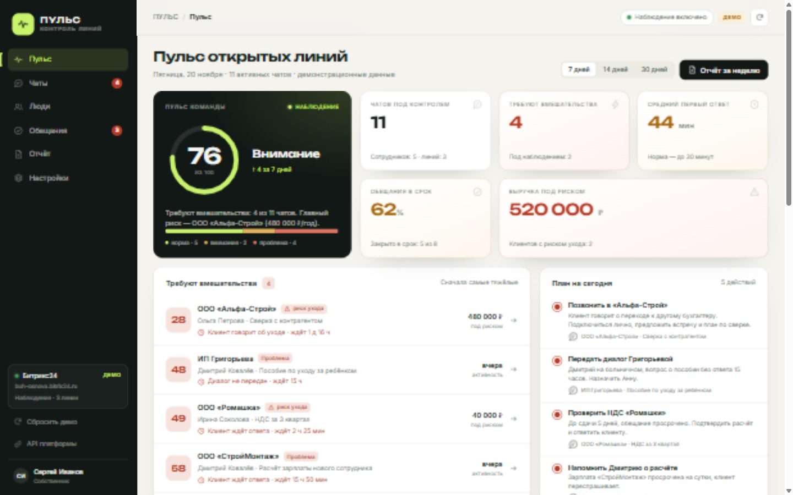
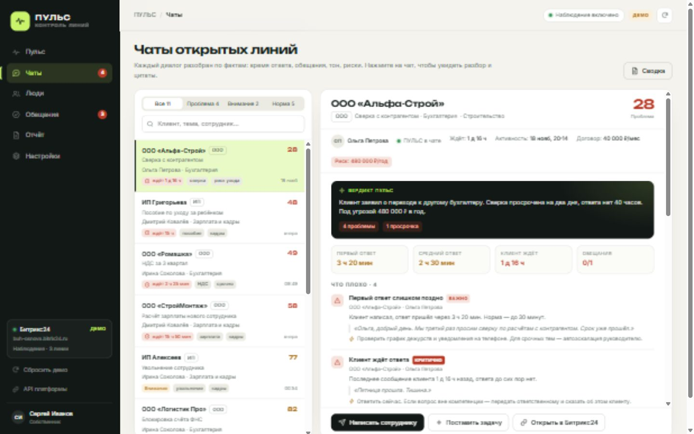
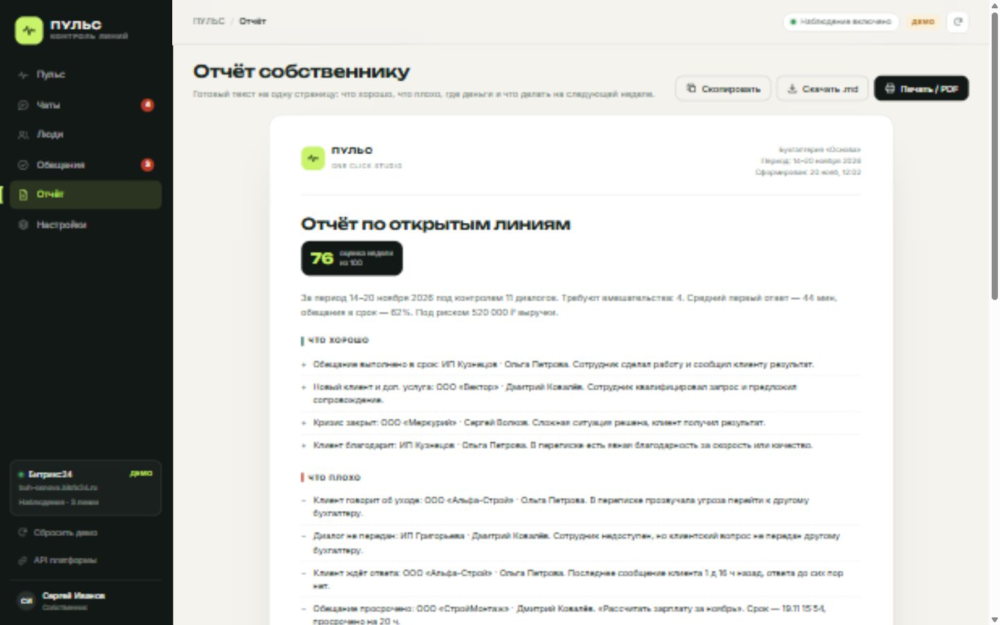

Бот находится в каждом чате открытой линии и каждое утро говорит собственнику: что хорошо, что плохо и что сделать сегодня, чтобы не потерять клиента, деньги или срок.
11 чатов в демо5 сотрудников3 линииоценка 0–100
Демонстрационный контур · данные вымышленыOne Click Studio · 2026
Зачем это нужно
Собственник узнаёт о проблемах последним
01
У бухгалтерской компании десятки активных чатов. В каждом — клиент, бухгалтер и поток вопросов: документы, сроки, зарплата, требования ФНС, сверки, увольнения. Прочитать всё руками невозможно, а выборочно — значит пропустить именно тот чат, где всё горит.
!
Клиент три дня ждёт ответаИ уже написал: «рассматриваем другого бухгалтера».
!
Обещали и забыли«Сделаю сегодня до 18:00» — и тишина. Клиент проверяет работу за нами.
!
Резкий ответВроде мелочь, но клиент обиделся и больше не задаёт вопросов.
!
Срок ФНС под угрозойДо сдачи НДС пять дней, а документы ещё не собраны.
ПУЛЬС читает все чаты и показывает не мнение, а факты с цитатами. Не «сотрудник плохой», а «клиент ждёт 2 часа 25 минут, обещание просрочено, до сдачи НДС 5 дней».
Три роли одного бота
Наблюдатель. Помощник. Контролёр.
Наблюдатель
Находится в чате, читает сообщения, фиксирует ответы, обещания, сроки, тон и риски.
не пишет клиенту
Помощник
В личном чате подсказывает сотруднику: «клиент ждёт 2 часа», «вы обещали до 15:00».
только сотруднику
Контролёр
Считает оценку, собирает красную зону, эскалирует руководителю и собственнику.
красная зона
1Ни один клиент не потеряется молчаЕсли клиент ждёт — это видно.
2Ни одно обещание не забудетсяБот сверяет «сделаю» с реальным результатом.
3Проблема видна до ухода клиентаРиск подсвечивается сразу, с цитатой.
4Одна страница вместо 50 чатовУтром — сводка, в пятницу — отчёт.
ПУЛЬС · для собственника02
Как это работает
Шесть шагов от сообщения до сводки
02
1
Подключается к линииБот-наблюдатель входит в открытую линию Битрикс24. Клиенту он не пишет.
2
Читает перепискуСообщения клиента и сотрудника, вложения, передачу диалога, связанные задачи.
Считает оценку0–100. Каждый балл объясним: нажмите на чат и увидите причину и цитату.
5
Действует по правиламПодсказка сотруднику, эскалация руководителю, задача, тревога собственнику.
6
Присылает сводкуВ 09:00 — короткое сообщение. В пятницу — отчёт на одну страницу.
ООО «Альфа-Строй»Сверка с контрагентом · Ольга Петрова
28
Клиент · 18 ноя, 11:28
Мы третий раз просим сверку. Срок уже прошёл.
Ольга · 14:48
Добрый день. Прошу прощения, сейчас запрошу.
Клиент · 14:58
Мы рассматриваем переход к другому бухгалтеру.
ПУЛЬС: риск ухода · обещание по сверке просрочено на 2 дня · клиент ждёт 40 часов
Ольга · 16:38
Подготовлю сверку до пятницы и пришлю.
Вердикт ПУЛЬС
Клиент заявил о переходе. Сверка просрочена на два дня, ответа нет 40 часов. Под угрозой 480 000 ₽ в год.
1 проблема1 просрочка480 000 ₽
Что важно: ПУЛЬС не оценивает «человека вообще». Он показывает температуру конкретного диалога. Один тяжёлый клиент не делает бухгалтера плохим — но и не растворяется в среднем балле.
ПУЛЬС · для собственника03
Что видит собственник
Один экран вместо пятидесяти чатов
03

Пульс. Оценка команды, красная зона, план на сегодня, динамика, что хорошо и что плохо.

Чаты. Вердикт, метрики, обещания и переписка с пометками.

Отчёт. Одна страница: люди, деньги, риски, план.
1
Красная зонаЧаты, где клиент ждёт, обещание сорвано или есть риск ухода. С причиной и суммой.
2
План на сегодня3–5 действий: кому позвонить, кому передать диалог, что проверить.
3
ЛюдиСильные стороны и зоны роста с примерами. Не рейтинг, а карта помощи.
4
ОбещанияЧто пообещали, кому и к какому сроку. Просрочки — красным.
5
ОтчётГотовый текст для собственника: можно скопировать, скачать, распечатать.
Бот замечает ожиданиеУ «Ромашки» клиент ждёт 2 часа, обещание по НДС просрочено. Уведомление Ирине и руководителю.
18:00
Итоги дняВ красной зоне два чата вместо четырёх. Один клиент спасён, одно обещание закрыто.
Чего бот не делает
Не отвечает клиенту от имени компании.
Не даёт налоговых консультаций и не считает налоги.
Не заменяет бухгалтера и не принимает решения.
Не читает личные переписки, почту и звонки.
Не публикует оценки сотрудникам.
Не наказывает автоматически.
Не выдумывает: каждый вывод — с цитатой.
Прозрачность
Сотрудники знают о боте. На старте — общее собрание: что читает, что нет, как используются оценки.
Клиент не видит внутренних заметок: подсказки уходят в личный чат сотрудника.
Оценка — повод для разговора и коучинга, а не приказ о премии.
Главный принцип: бот нужен не для того, чтобы «поймать» сотрудника, а чтобы клиент не остался без ответа, а срок — без подтверждения. Если проблема системная — меняем процесс, а не наказываем людей.
−20%
средний первый ответЦель пилота: клиент ждёт меньше.
80%
обещаний в срокКаждое «сделаю» подтверждено результатом.
1–2 ч
в неделю на контрольВместо чтения десятков чатов вручную.
ПУЛЬС · для собственника06
Следующий шаг
Пилот за 14 дней на одной линии
06
Не нужно внедрять сразу на все линии. Достаточно одной, чтобы проверить точность и пользу.
День 1–2
Подключение. Бот читает линию, настраиваем пороги, проверяем события.
Через две недели собственник открывает сводку и понимает, что делать сегодня. Количество клиентов, ждущих больше часа, снижается. Обещания выполняются чаще.
Это слежка за сотрудниками?
Нет. Это контроль качества обслуживания, как запись звонков. Только рабочие чаты с клиентами, сотрудники знают, оценки — для помощи.
Бот будет отвечать клиентам?
В базовом режиме — нет. Он молчит в чате клиента. Автоответы можно включить отдельно и только на безопасные темы.
А если бот ошибётся?
Каждый вывод подкреплён цитатой. Спорный случай открывается и отменяется вручную. Ошибки улучшают модель.
Начните с одной линии14 дней · одна линия · понятный отчёт собственнику